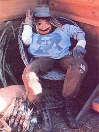
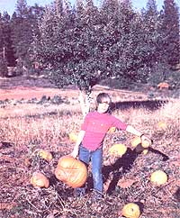
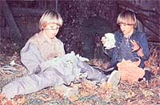
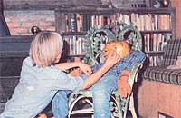
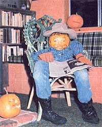

On the last lonesome night of October - when the pale moon hangs cold and heavy in the autumn sky - bands of ghoulish creatures shuffle across the brown stubble of the now fallow fields, restlessly wandering from farmhouse to farmhouse. And stranger still the apparitions utter shrieks of "trick or treat" ... as if trying to scare the last withered leaves down from the branches. It sounds like the time to make some great Halloween decorations!
If your household welcomes this annual visit of ghosts and ghouls and other ghastly haunts that go BUMP in the night, the whole brood will probably enjoy creating a friendly (or scary!) family of pumpkin people to delight your masquerading visitors. This fun-filled Halloween project is so easy that even the youngest tot in your home can help out, and the only materials you'll need are some old clothes, an ample supply of stuffing, a handful of rubber bands, a felt-tipped marking pen, a few well-selected pumpkins from the garden patch and a spark of spooky imagination.
Before you can actually begin to construct a host of ghoul-greeters, you'll have to gather enough worn-out wearables to outfit Ma, Pa and Junior (as well as, perhaps, a few of his brothers and sisters) Pumpkinhead. The number of members in your pumpkin people family will determine the amount of clothing required. We generally save up a sufficient supply of well-used duds to enable each "sculptor" in our house to fashion one of the life-sized figures. Old trousers or overalls and long-sleeved shirts or blouses are ideal garments to use because, once such toggery is stuffed, the resulting dummies look remarkably lifelike. However, you can deck out Ma Pumpkinhead in a dress ... if you first clothe her in pants and then drape a frock over the "pantaloon petticoat."
Once you've assembled an adequate quantity of wearing apparel, you can begin shaping the bodies of your squash-headed relations. Fasten a rubber band around the bottom of each pant leg to close off that opening, and then pack the trousers with some filler material (straw, leaves, rags, or wads of crumpled newspaper are all excellent body builders). Next - using that same technique - secure the shirt sleeves at the cuffs and stuff the arms, then button the front and pad out the chest area.
That done, prop the lower portion of the scarecrow-like body in an armchair and rest the upper torso in place on top. At this point, it's a good idea to join the two sections by pinning the trousers to the shirt or blouse in several places. That way, your Halloween house guest will be more likely to stay in one piece. (Since pumpkin people are casual critters and known to be somewhat careless in their dress, let a bit of the shirttail hang out over the dungarees for authenticity.) Finally, punch the stuffing around until your headless haunt is well balanced.
Here's the step our family enjoys most in the build-a-person process: designing the faces. This is the stage at which you can let your imagination run riot. Bring the heads-to-be in from the garden (small, well-rounded pumpkins with flattened bottoms will be stable and easy to decorate; however, you might want to use a larger, uneven globe to give your creation a unique personality), sponge off the surface dirt and let the spheres dry. (Note that nowhere has the word "cut" been mentioned! Carved and hollowed heads will soon shrivel and mold, so allow your pumpkin folks to keep their seedy brains. Later - when the other jack-o'-lanterns have lost their toothy smiles - your heavy-headed individuals will still be grinning wide.)
The next step is to conjure up a grimace that'll be sure to fascinate the neighborhood night stalkers. Some designers - especially the younger folks - may find it helpful to draw a variety of faces (happy, sad, freakish or friendly) on paper first, and then pick a favorite to transfer to the pumpkin. When you've finally hit upon a smirk that strikes your fancy, check to make sure that the "face" is dry (wipe it off with a rag or paper towel if it isn't) and draw the chosen expression on the pumpkin's skin, using a felt-tipped marker.
As you become more competent at face fashioning, you might want to fill in the marker outlines with paint to provide extra color on the golden globes. And don't forget to top off your creations: A bit of straw, yarn, grass, or even an old mop will serve as hair, and - at the same time - hide any stumpy remains of the vine.
Now, very carefully, set the heads down on their respective bodies. Your creatures may never win any awards for posture, but with a well-placed poke or two you can push the wadding about until each grimacing globe balances where a head ought to be, and the body lolls lazily in the easy chair.
Since your new friends will likely be lounging out on the porch this fall, rather than huddling near the woodstove, you'll want to provide a few finishing touches to keep them cozy during the cool autumn nights. Throw a scarf around a chilly neck, add a pair of gloves, place a hat on a thin-haired head, and provide your squatters with footwear. The short dangling legs of a pumpkin child can sport a pair of tennis shoes, while Ma and Pa might rest their weary feet in some down-at-the-heels western boots, old galoshes, or even well-broken-in bedroom slippers.
And finally, supply something for your front porch companions to amuse themselves with while they await their ghostly visitors. Pa can smoke a pipe, read the paper (he might need spectacles), or whittle away at a stick ... while Ma could knit a cold-weather comforter or catch up on her fall canning by snapping beans into a pot. And Junior? Well, chances are he'll just want to sit idly by with his hands in his pockets, smiling as the spooky parade passes by.
Not only are pumpkin people a friendly way to "trick" your witching-night visitors ... they're also the basis for some tasty treats after Halloween. The "meat" from your pumpkinheads will make a mouthwatering Thanksgiving pie. And don't throw away those seeds! Roast them for some downright delectable munching on a nippy fall afternoon. To roast pumpkin seeds, preheat the oven to 250 degrees Fahrenheit. Then separate the seeds, place the unwashed kernels in a bowl, and mix in 1 ½ tablespoons of melted butter. Next, spread the coated morsels on a cookie sheet and sprinkle them with 1 ¼ teaspoons of salt. Finally, simply bake the seeds until they become dry and crisp (it'll take 30 to 40 minutes), put the hot nuggets in a bowl, and dig in!
Although you'll most likely want to use all the seeds as snacks, do save a handful or two and prepare a winter banquet that's "strictly for the birds." Just put the raw seeds between layers of newspaper to let them drain and dry, and then mix the morsels with bird seed. This delicious delicatessen fare will be readily devoured by your feathered friends in the late fall when wild rations grow scarce.
Furthermore, if your pumpkin crop is a nonhybrid strain, you can store some of the uncooked seeds in an airtight container till spring ... and then watch a second generation of pumpkin people grow!
So before you stow your fall harvest of golden globes in the root cellar, choose two or three for a bit of Halloween decorating fun ... and some after-the-holiday feasting!
|
 JUANITA BROWN Get creative with your Halloween decorating props. For instance, you can deck out your pumpkin people in hats and galoshes. |
 JUANITA BROWN The sculptors in our clan generally choose the largest squash for a jack-o'-lantern display, and save the smaller specimens to fashion heads for pumpkin people. |
 JUANITA BROWN Stuff worn-out wearables with hay (or some other filler material) to form a bulky body. |
|
 JUANITA BROWN Draw a goofy (or glaring!) grimace. |
 JUANITA BROWN Neighborhood trick-or-treaters will love your finished pumpkin people! |
|